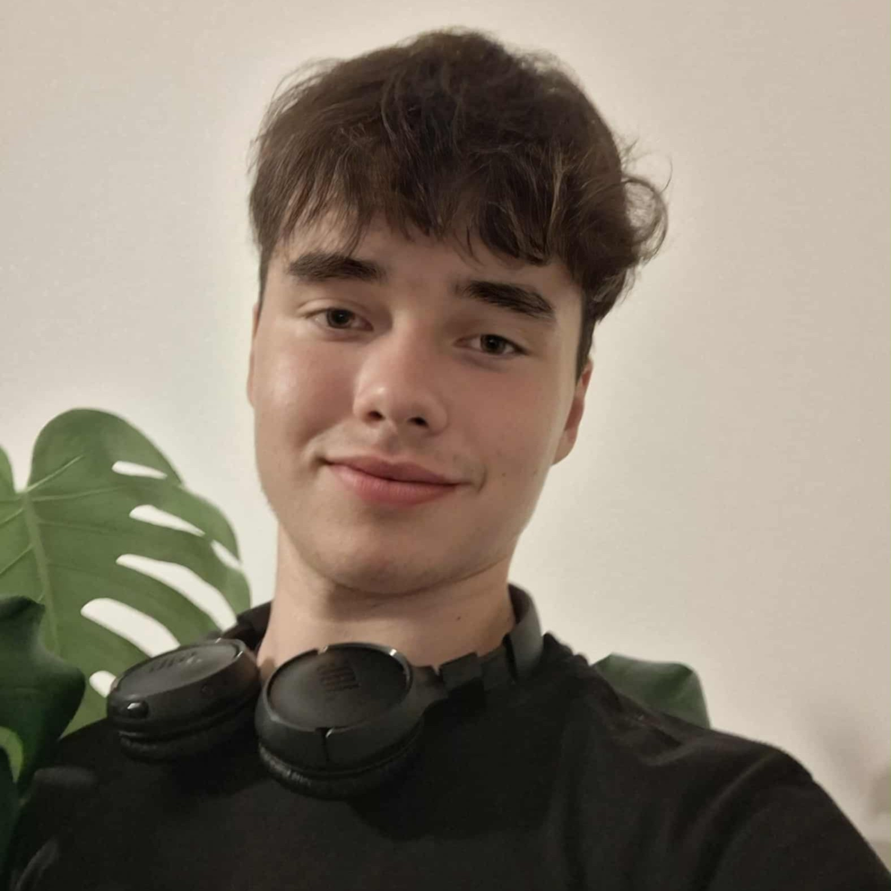

Interesuję się modelowaniem 3D, astronomią oraz szeroko pojętą inżynierią. Uwielbiam projektować i konstruować rzeczy, które mogą mi się przydać w codziennym życiu. W wolnym czasie chętnie jeżdżę na rowerze i chodzę po górach, a oprócz tego również ćwiczę strzelectwo.
Moją rolą jest zaprojektowanie hardware'u, do czego zaliczamy schematy elektroniczne oraz obudowę CanSata wraz z mechanizmem uwalniającym spadochron. Kiedy skończę etap projektowania, zajmę się lutowaniem komponentów CanSata.